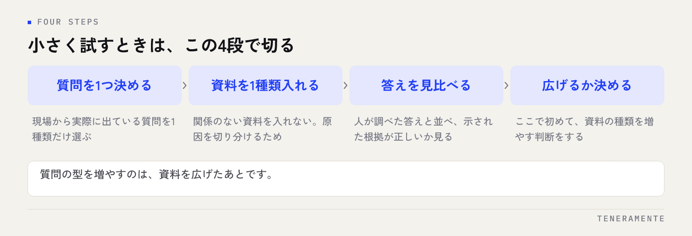

社内の資料をAIに読ませて、質問に答えさせたい。やりたいことは決まっているのに、いくらかかるのか見当がつかない。社内データ検索AIの相談で、最初に出る疑問がこれです。結論から申し上げると、RAG構築の費用を決めているのはAIの性能ではなく、読ませる資料の状態です。この記事では、費用がどこで決まるのかと、最初に小さく試す範囲の切り方を整理します。
📌 この記事の結論
RAG構築の見積もりは、資料の形式・件数・更新の頻度・見せてよい範囲の4点が決まると形になります。先に全社の資料をまとめようとせず、質問の型を1つ、資料を1種類に絞って試すと、費用と効果の両方を小さい単位で確かめられます。仕組みの基礎はRAGとは？社内ナレッジをAIに答えさせる仕組みに整理しています。
01RAG構築の費用は、AIの性能ではなく資料の状態で決まる
RAG（Retrieval-Augmented Generation、検索で補う文章生成）は、質問が来たら社内の資料から関係のある箇所を探し、その箇所を根拠としてAIに答えさせる仕組みです。つまり、AIの前に検索があります。費用の大半は、この検索できる状態を作る工程に集まります。
同じ「社内の資料を検索できるようにしたい」という依頼でも、かかる手間はまったく違います。文書ソフトやクラウドの文書サービスで作られた資料は、文字をそのまま取り出せます。一方、紙をスキャンしたPDF、画像として貼られた表、手書きの記入欄が混ざった帳票は、文字を取り出す工程が先に必要です。取り出せたとしても、表の行と列の関係が崩れていれば、検索で拾っても答えの根拠になりません。
もう一つ費用を動かすのが、資料の重複です。同じマニュアルの新旧が複数のフォルダに残っていると、検索は両方を拾います。どちらが有効なのかを仕組みは判断できないため、古い手順をもとに答えてしまいます。精度を落とす最大の原因は、AIの選び方ではなく資料の重複と版の管理です。
見積もりを取る前にやることは決まっています。読ませたい資料を一覧にして、その形式と置き場所を書き出す。この一覧があるかどうかで、提示される金額の幅が変わります。
02費用の内訳を4つに分ける：資料の整備・作る・使い続ける・直す
RAGの費用は、4つに分けて考えると比較できるようになります。
一つ目は、資料の整備です。読ませる資料を集め、文字を取り出し、古い版と重複を落とし、どの部署が見てよい資料なのかを区別します。ここは開発というより整理の作業で、社内でできる部分と任せる部分を分けられます。
二つ目は、作る工程です。資料を検索できる形に変換する処理、質問を受ける画面、答えと一緒に根拠の出典を示す仕組み、閲覧できる範囲を分ける権限の設定。ここが一般に「開発費」と呼ばれる部分です。
三つ目は、使い続ける費用です。AIの利用料、検索用のデータを置く場所の費用、資料が更新されたときに取り込み直す処理。この3つ目が見積もりから抜けていると、公開した翌月から想定外の請求が始まります。
四つ目は、直す費用です。答えがずれたときの調整、資料の追加、項目の変更。使い始めてから必ず出る作業で、月額に含むのか都度見積もりなのかを先に決めておく項目です。業務自動化全体の費用の考え方はAIで業務を自動化するときの頼み方にも整理しています。
03費用を押し上げる5つの条件を、見積もり前に確かめる
同じRAGでも、次の5つの条件で手間が変わります。自社がどちらに寄っているかを見てから相談すると、金額の理由が分かります。
| 条件 | 軽く済む場合 | 手がかかる場合 |
|---|---|---|
| 資料の形式 | 文字がそのまま取り出せる文書・表 | スキャンしたPDF、画像の表、手書きの帳票 |
| 件数と重複 | 置き場所が1か所で、版が1つ | 複数のフォルダに新旧が散在し、どれが有効か不明 |
| 更新の頻度 | ほぼ変わらない規程・マニュアル | 毎週書き換わる手順書、日々増える案件の記録 |
| 見せてよい範囲 | 全社員が同じ資料を見てよい | 部署や役職で見える資料を分ける必要がある |
| 求める答えの厳しさ | 当たりを付けて、原文を自分で確認する | 答えをそのまま顧客対応や社外文書に使う |
右の列に寄るほど、整備と検証の工程が増えます。とくに下の2つは設計そのものを変えます。見える範囲を分ける必要があるなら、検索の段階で絞り込む仕組みが要ります。答えをそのまま社外に出すなら、根拠の提示と確認の手順を業務に組み込む前提で作ります。
逆に、左の列に寄っている資料だけを対象にすれば、最初の範囲はかなり小さくできます。全部をいっぺんに対象にしないという判断が、費用をいちばん大きく動かします。
04まず小さく試す範囲は、質問の型を1つに絞って切る
小さく試すときに迷うのが、何を「小さく」するかです。資料の量を減らすのではなく、答えさせたい質問の型で切ると、結果が判断に使える形になります。

一段目は、質問を1つ決めることです。「この規程で有給はいつから使えるか」「この製品の保証はどこまでか」のように、現場から実際に出ている質問を1種類選びます。
二段目は、その質問に答えるために必要な資料を1種類だけ入れることです。関係のない資料を入れると、精度が落ちた原因が資料なのか仕組みなのか分からなくなります。
三段目は、答えを見比べることです。同じ質問を人が調べた場合の答えと並べ、根拠として示された箇所が正しいかを見ます。
四段目は、広げるかどうかを決めることです。ここで初めて、資料の種類を増やす判断をします。
試す前にそろえておく材料は次のとおりです。そのまま確認に使えます。
- 現場から実際に出ている質問を、言葉そのままで集めたもの
- その質問に答えている資料の名称と、置いてある場所
- その資料の形式（文書ソフト、PDF、表計算、紙のスキャン）
- 資料の有効な版はどれか、誰が更新しているか
- 見せてよい相手の範囲（全社か、部署限定か）
- 答えが間違っていた場合に、何が困るか
小さく作る進め方そのものは社内ツールを小さく作って試す方法に手順をまとめています。
05答えが合っているかを、どうやって測るか
RAGで最も飛ばされやすく、飛ばすと費用が無駄になるのが、答えの検証です。ここを決めずに作ると、「なんとなく使えそう」で止まり、広げる判断ができません。
まず、現場から集めた質問をそのまま検証用のリストにします。質問は、答えが1つに決まるものと、条件によって変わるものを混ぜておきます。次に、それぞれの答えを3つに分けて記録します。正しい、根拠が示されていない、誤り。この3分類で十分です。
重要なのは、誤りの中身を分けて見ることです。資料に書いていないことを答えた場合と、資料にあるのに拾えなかった場合では、直す場所が違います。前者は答えの作り方、後者は検索の作り方の問題です。
もう一つ確かめるのが、資料に書いていない質問に対して「分かりません」と答えられるかです。社内AIで事故につながるのは、知らないことを自然な文章で埋めてしまう動きです。検証用のリストには、資料に答えが無い質問を必ず混ぜてください。
この検証表を作っておくと、資料を追加したときに前より良くなったのかを同じ基準で比べられます。導入でつまずく型はAI導入の失敗を避ける方法にも整理しています。
06試したあと、広げる・やめる・別の手に替えるの3択
小さく試した結果は、次の3つのどれかに振り分けます。曖昧なまま続けるのが、いちばん費用を使います。
広げる判断になるのは、答えの正しさが実務に足りていて、質問の件数も多い場合です。このときは、同じ質問の型のまま資料の種類を増やす方向に進みます。質問の型を同時に増やすと、検証の基準が崩れます。
やめる判断になるのは、そもそも質問の件数が少なかった場合です。試してみると、ほとんど聞かれていない質問だったという結果はよくあります。これは失敗ではなく、小さく試したから分かった成果です。
別の手に替える判断になるのは、答えが毎回同じで、検索の必要が無かった場合です。よくある質問の一覧を1枚にまとめて共有する、申請の画面に注意書きを出す、入力の形式を変えて質問が起きないようにする。AIより先に、資料の置き方で解決する課題は少なくありません。
どの判断になっても、検証表と資料の一覧は残ります。この2つが社内に残ることが、小さく試す本当の価値です。
07よくある失敗と、その避け方
RAGの相談で繰り返し見かける失敗は、次の4つに集まります。
全社の資料を先に整理しようとする。整理そのものが大きな仕事になり、AIを試す前に止まります。質問1つに必要な資料だけを先に整えます。
根拠の出典を表示しない作りにする。答えだけが出る仕組みは、合っているか確かめられず、現場が使いません。どの資料のどこを見たのかを必ず表示する前提で設計します。
権限を後から足そうとする。誰が何を見てよいかは、検索の作り方に関わります。後から分ける場合、検索の仕組みを作り直すことになります。
資料の更新の取り込みを決めずに公開する。手順書が書き換わっても取り込まれなければ、古い答えを返し続けます。誰がいつ更新を反映するのかを、公開前に決めておく項目です。
08自分で進める場合と、専門家に任せる場合の分かれ目
一般論として、判断の基準は3つあります。
一つ目は、資料の形式がそろっているかどうかです。文字がそのまま取り出せる資料だけで足りるなら、既製のサービスの機能で試せる範囲は広いです。スキャンしたPDFや画像の表が主なら、文字を取り出す工程の設計から必要になり、設定の工夫では収まりません。
二つ目は、見せてよい範囲を分ける必要があるかどうかです。全員が同じ資料を見てよいなら、小さく始めて様子を見られます。部署や役職で分ける必要があるなら、最初の設計で道をふさがないほうが結果的に安く済みます。
三つ目は、検証を社内で回せるかどうかです。質問を集め、答えを3分類で記録し、直す場所を切り分ける。この作業を続けられるなら、道具を選ぶ段からで構いません。ここが続かないなら、検証の仕組みごと相談したほうが早く進みます。
迷うときは、1年後にこの仕組みで誰の何時間が減っているかを1文で書いてみてください。「調べる時間が短くなる」までなら、既製のサービスで試す価値があります。「誰が聞いても同じ答えが根拠付きで返り、担当者への質問が減っている」まで書けるなら、最初から設計を相談する価値があります。
09よくある質問
資料がスキャンしたPDFしかありません。RAGは使えますか？
社内の資料をAIに読ませても、外部に漏れませんか？
どのくらいの資料量から意味が出ますか？
既製のサービスと、作ってもらう場合の違いは何ですか？
試した結果が良くなかった場合、費用は無駄になりますか？
10まとめ：資料の状態を書き出すところから始める
RAG構築の費用は、AIの選び方ではなく資料の状態で決まります。資料の形式、件数と重複、更新の頻度、見せてよい範囲、求める答えの厳しさ。この5つを書き出すと、見積もりの幅が狭まり、金額の理由も分かります。最初の範囲は、資料の量ではなく質問の型を1つに絞って切る。答えは正しい・根拠なし・誤りの3分類で記録し、資料に無い質問に「分かりません」と答えられるかまで確かめる。ここまでやると、広げるかやめるかを事実で決められます。
TENERAMENTEなら、この記事で挙げた「全社の資料整理から始めて止まる」「検証の基準が無く広げる判断ができない」の2つを、進め方の側で外します。開発は3回のミーティングで要件を固める形を取っており、1回目に現場から実際に出ている質問と、その答えが書かれた資料の形式・置き場所・更新者を一緒に書き出して、最初に対象とする1種類を決めます。2回目に根拠の出典の出し方と見える範囲の分け方、資料が更新されたときの取り込みの担当まで含めて範囲を固めます。最短2週間でのPoC（Proof of Concept、試作による検証）に対応しているため、質問の型を1つに絞った状態で答えの正しさを先に確かめ、広げるかどうかを実物を見てから決められます。担当者が同じ質問に何度も答えている時間と、どの資料が有効な版か探す時間がそのまま減ります。AI開発の進め方と範囲はAI活用・開発にまとめています。初回のご相談60分は無料ですので、資料がそろっていない段階でもお問い合わせからお気軽にご相談ください。